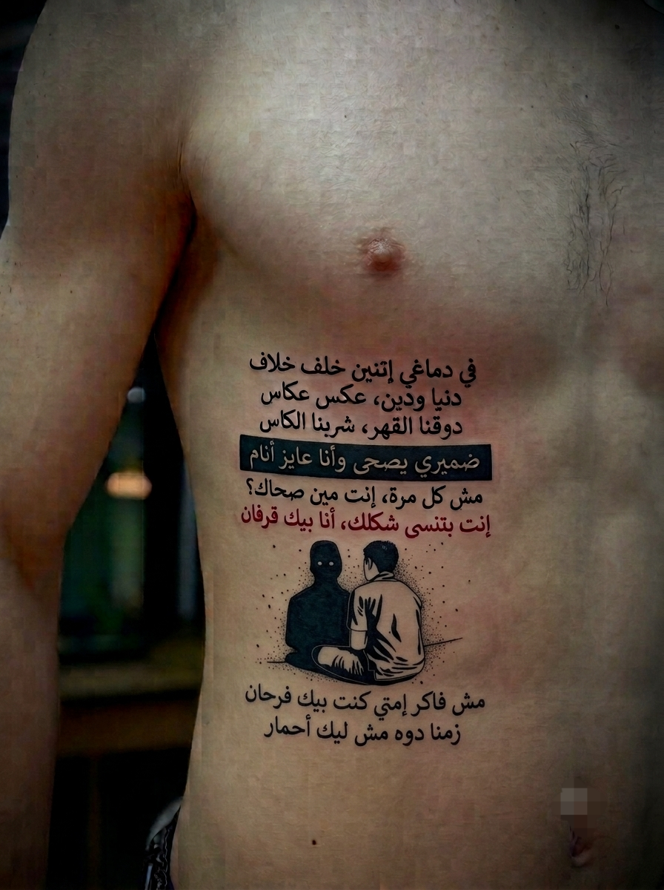

العيادة رقم 14
الفصل الأول: هندسة الحبر... والإنسان اللي اختفى
...تيك...
...تاك...
...تيك...
...تاك...
الغريب إن صوت الساعة ساعات بيبقى أعلى من صوت الناس.
كل تيكة كانت كأنها بتعد وقت ضاع...
وكل تاكة كانت بتفكرك بحاجة كنت فاكر إنك نسيتها.
العيادة هادية بطريقة مستفزة.
ريحة الديتول مالية المكان، مخلوطة بريحة ورق قديم وملفات متكومة فوق بعضها. التكييف بارد، زيادة عن اللزوم، والكرسي الجلد اللي قاعد عليه علي مريح بشكل يخليك تحس إن الراحة نفسها عاملة كمين.
الدكتور كان قاعد في آخر الأوضة، ساند ضهره لورا، حاطط رجل على رجل، ونظارته نازلة سنة صغيرة على مناخيره.
بين كل كام ثانية...
تك... تك... تك...
يقلم ضوافره بمنتهى البرود.
كأن مفيش قدامه بني آدم.
كأن اللي قدامه مجرد ملف جديد هيتقفل آخر اليوم.
أما علي...
فكان قاعد ساكت.
هادئ بشكل يخوف.
إيده متشابكة قدام بعض، ورجله بتهز الأرض هزة بسيطة جدًا، الهزة الوحيدة اللي كانت بتفضح إن جواه إعصار.
وشه مفيهوش أي تعبير.
إلا الابتسامة دي...
الابتسامة اللي الناس فاكرة إنها ثقة...
وهي في الحقيقة أرخص طريقة اخترعها الإنسان عشان يخبي إنه خلاص مبقاش عنده طاقة يشرح.
الدكتور رفع عينه من الملف...
وبص على جسم علي.
عينه كانت ماشية على التاتوهات واحدة واحدة.
مش بيبصلها كرسومات...
لا...
كأنه بيقرأ اعترافات مكتوبة بالحبر.
ابتسم ابتسامة صغيرة وقال بهدوء مستفز:
"علي صقر...
حتى اسمك عامل دوشة.
اسم تقيل...
كبير...
تحسه داخل أي مكان قبلك.
بس الغريبة إن اللي قاعد قدامي دلوقتي...
مش باين عليه أي حاجة من الاسم ده."
سكت ثانيتين...
وقفل الملف.
"أنا شوفت ناس كتير عاملة تاتوهات...
بس أنت...
أنت عامل متحف كامل."
أشار بالقلم ناحية دراعه.
"كل رسمة ليها مكان...
كل كلمة محسوبة...
كل خط متعملش كده وخلاص.
وده معناه إن الحبر عندك مش للمنظر.
الحبر عندك بيتكلم."
سكت...
وبعدين مال لقدام سنة.
"السؤال بقى...
بتحاول تقول إيه؟"
الصمت نزل على الأوضة.
حتى صوت الساعة اختفى من ودن علي.
هو كان سامع صوت تاني...
صوت قديم...
ناس كانت بتقول:
"إحنا معاك."
"إحنا عمرنا ما هنسيبك."
"اطمن."
الغريب...
إن كل الأصوات دي اختفت أول ما الدنيا قلبت.
رجع للدكتور.
ونفس الابتسامة لسه على وشه.
ابتسامة باردة...
باردة لدرجة إن اللي يشوفها يحلف إن صاحبها معندوش مشاعر.
بس الحقيقة...
إنها كانت آخر حاجة فاضلة واقفة بعد ما كل حاجة جواه وقعت.
ابتسم أكتر...
وقال:
"يا دكتور...
الغريب في البشر إنهم بيعشقوا يشوفوا النهاية...
بس أول ما تبدأ تحكيلهم البداية...
يبصوا في الساعة.
ولو كملت...
يبصوا في الموبايل.
ولو اتوجعت...
يقولولك: شد حيلك.
ولو وقعت...
يسألوك: هتقوم إمتى؟
ولو قومت...
يتعاملوا كأنك عمرك ما وقعت."
ضحك ضحكة صغيرة...
لكنها كانت ضحكة مالهاش صوت.
"فبطلت أحكي.
مش عشان الكلام خلص...
لأ...
عشان محدش أصلًا كان بيسمع."
بص ناحية الأرض.
وأخد نفس طويل.
"زمان...
كنت فاكر إن كل الناس اللي بتحضنك بتحبك.
وكل اللي يطمنك هيكمل معاك.
وكل وعد بيتقال...
لازم يتنفذ.
كنت غبي...
أيوة...
غبي.
بس الغباء الحقيقي مش إنك تثق.
الغباء إنك تفضل تثق في نفس الناس بعد ما يعلموك الدرس بنفس الطريقة كل مرة."
سكت...
وحرك صوابعه بهدوء.
"كل مرة كنت أقول:
المرة دي غير.
وأرجع ألاقي نفسي بضحك.
مش عشان مبسوط...
لأ...
عشان كنت مستغرب من نفسي.
هو أنا لسه بتفاجئ؟
هو أنا لسه مستني حاجة من حد؟"
رفع عينه للدكتور.
نظرة هادية...
بس فيها تعب سنين.
"عارف يا دكتور...
أصعب حاجة مش إن الناس تخذلك.
أصعب حاجة...
إنك تفضل تدور على سبب.
تقعد تقول:
يمكن كانوا مضغوطين...
يمكن الظروف...
يمكن فهموني غلط...
يمكن...
يمكن...
لحد ما تكتشف إن كل الـ (يمكن) دي كانت محاولة منك تنقذ صورة ناس، وهم أصلًا كانوا من زمان أنقذوا نفسهم... وسابوك."
الدكتور كان ساكت.
أول مرة بطل يقلم ضوافره.
القلم نزل من بين صوابعه.
وبدأ يبص لعلي بنفس الطريقة اللي الدكتور بيبص بيها للمريض...
لما يحس إن اللي قدامه مش بيقول كلام...
ده بيطلع حاجة مدفونة بقالها سنين.
عين الدكتور نزلت على الدراع الشمال.
وقف قدام أول تاتو.
ابتسم ابتسامة خفيفة...
وقال:
"واضح إن هنا...
القصة بتبتدي."
وعينه استقرت على أول كلمة محفورة بالحبر...
Try for yourself...
الفصل الثاني: العينين اللي شافوا الإنسان... قبل ما يشوفوا شكله
الدكتور قرب خطوة.
ببطء...
كأنه خايف يقرب زيادة.
عينه كانت واقفة على أول سطر.
Try for yourself.
قرأها مرة...
واتنين...
وبعدين نزل بعينه لتحت.
وساعتها...
سكت.
العينين.
مرسومين بدقة تخليك تحلف إنهم هيطرفوا بعد ثانية.
فيهم لمعة خفيفة...
وفيهم هدوء غريب...
بس أكتر حاجة شدت الدكتور...
إن العينين دول كانوا مختلفين عن باقي الحبر.
كل التاتوهات كان فيها تحدي...
غضب...
وجع...
إنما العينين...
كان فيهم أمان.
حاجة مكنتش راكبة مع باقي جسم علي.
الدكتور مال وشه شوية...
وقال وهو لسه باصص عليهم:
"مين دي؟"
علي مبيردش.
فضل باصص على دراعه كأنه أول مرة يشوفه.
ابتسم...
بس الابتسامة دي المرة دي مكانش فيها سخرية.
كان فيها حنين...
وجع...
وحاجة شبه الامتنان.
رفع إيده ولمس العينين بطرف صوابعه...
برقة...
كأن الحبر ده ممكن يحس.
وبص للدكتور.
"مروة."
الدكتور رفع حاجبه.
"واضح إنها كانت مهمة."
علي ضحك ضحكة قصيرة.
"كانت؟"
سكت ثانيتين.
"هي فيه ناس بتخلص يا دكتور؟
فيه ناس بتسيب أثر...
حتى لو الزمن كله عدى...
الأثر بيفضل مكانه."
رجع يبص للعينين.
وصوته هدي أكتر.
"الناس كلها كانت بتبص على علي اللي واقف قدامها.
إنما مروة...
كانت أول واحدة تبص على علي اللي مستخبي جواه."
لف للدكتور.
"فاهم الفرق؟"
الدكتور مردش.
وعلي كمل.
"الناس كانت تشوف واحد بيضحك...
هي كانت تشوف إنه تعبان.
الناس كانت تقول: ده قوي.
هي كانت تقول: لا... ده شايل فوق طاقته.
الناس كانت تسمع كلامي...
هي كانت تسمع السكوت اللي بين الكلام."
أخد نفس طويل.
"الغريب إن الإنسان طول عمره بيدور على حد يفهمه.
مش يوافقه...
ولا يجامله...
ولا يقوله حاضر.
بس يفهمه.
ولما يلاقي الشخص ده...
بيحس إن الدنيا بطلت تبقى تقيلة شوية."
الدكتور قال:
"كانت حبيبتك؟"
علي ابتسم.
"لأ...
كانت رزقي."
الدكتور بصله باستغراب.
فعلي كمل وهو بيبص للعينين.
"فيه ناس بتدخل حياتك صدفة.
وفيه ناس ربنا يبعتهم في الوقت اللي أنت خلاص كنت فاقد فيه الإيمان بكل حاجة.
وأنا...
ربنا رزقني بمروة."
صوته بدأ يوطى.
"أنا مش بقول إنها ملاك علشان بحبها.
أنا بقول إنها ملاك...
لأنها كانت أول إنسانة شافت جوايا حاجة حلوة...
في الوقت اللي أنا نفسي كنت شايف إني مستاهلش أي حاجة حلوة."
سكت.
وبعدين ضحك بسخرية.
"تخيل؟
أنا كنت شايف نفسي شخص عادي...
يمكن أقل من عادي.
إنما هي...
كانت بتعاملني كأني أغلى حاجة في الدنيا.
وأقسم بالله يا دكتور...
لحد النهارده...
مش عارف هي كانت شايفة إيه."
الدكتور قال:
"وإنت شايف إنها غيرت حياتك؟"
علي هز راسه.
"لا...
دي غيرتني أنا."
سكت شوية.
"الولادة الجديدة اللي الناس فاكراها بدأت مع الحبر...
لأ.
الحبر جه بعدين.
أما البداية الحقيقية...
فكانت يوم ربنا بعتلي مروة."
عين الدكتور نزلت تحت العينين. وقف قدام التكملة:
and for me
لكن كلمة...
me
كانت لوحدها باللون الأحمر.
الدكتور قرب أكتر، وقال:
"ليه الكلمة دي بالذات بالأحمر؟ وليه مربوطة بالعينين اللي فوقيها؟"
علي لمس الكلمة بصوابعه، وبرغم برودة الأوضة، كان واضح إن نبرة صوته اتهزت بحمل أتقل وشجن أعمق:
"علشان الجملة على بعضها يا دكتور مكانتش مجرد شعار.. الجملة دي بتقول إن العينين دول كانوا باصين عليا.. and for me.. يعني علشاني أنا. مروة مكانتش مجرد شخص عابر، دي كانت المراية اللي شوفت فيها نفسي لأول مرة. عارف أكتر كلمة كنت بنساها في حياتي يا دكتور؟"
"...أنا."
"كنت بعمل كل حاجة علشان الناس. أرضي ده، وأساعد ده، وأستحمل ده، وأجي على نفسي علشان الكل.. لحد ما نسيت إن فيه واحد اسمه علي. مروة كانت أول واحدة تخليني ألتفت لنفسي.. أول واحدة تقوللي: عيش لنفسك شوية."
بص للكلمة الحمرا، وأخد نفس حاد وكأنه بيستجمع روحه:
"وحتى لو الدنيا لفت بينا.. ومبقناش مع بعض دلوقتي.. وحتى لو الظروف كانت أقوى مننا وكل واحد راح في طريق.. فـ me اتكتبت بالدم عشان تفضل ثابتة ومتموتش. دي وعد ليها، ووعد لنفسي.. إن علي اللي هي تعبت عشان تخليه يشوف نفسه ويحبها، مش هسمحله يضيع تاني. أنا هفضل أحاول، وهفضل أعافر وأقوم.. علشاني، وعلشان الروح النضيفة اللي هي أحيتها جوايا."
وفجأة.. عين الدكتور انتبهت لراس وجسم الحية (التعبان) اللي طالع وممتد مباشرة من تحت حرف الـ (e) في كلمة me. جلدها مرسوم بتفاصيل دقيقة ومرعبة، كأنها بتشق طريقها وتزحف خارجة من قلب الكلمة دي بالذات.
الدكتور مال براسه وقال بذهول:
"يعني التعبان.. بدأ يخرج من هنا؟ منك أنت.. وبسببها؟"
علي هز راسه، وابتسامته رجعت بس المرة دي كانت دافية وموجوعة في نفس الوقت:
"بالظبط يا دكتور. التعبان بدأ من هنا.. من لحظة التعب والولادة الجديدة اللي هي كانت سبب فيها. الناس أول ما تشوف التعبان تقول شر، سم، خيانة.. وأنا كل مرة أضحك. لأنهم عمرهم ما كملوا الحكاية."
"ليه؟"
"لأن التعبان هنا مش رمز للشر. التعبان هو الكائن الوحيد اللي لما الدنيا تضيق عليه وجلده يقدم ويتبهدل من الجروح، بيعمل إيه؟ بيخلع جلده كله. بيسيب النسخة القديمة، الضعيفة، المكسورة اللي اتأذت من الناس.. وبيمشي بنسخة جديدة قوية. مروة هي اللي خلتني أبدأ أخلع جلدي القديم. هي اللي زرعت جوايا القوة إني اتولد من جديد ومستسلمش للوجع. وعشان كده التعبان طالع من كلمة me.. لأن ولادتي الجديدة كانت بسببها، ومكملة علشاني وعلشانها.. حتى لو مبقناش مع بعض."
سكت.. وبص لمروة المرسومة على دراعه، وقال بابتسامة هادية:
"لو فيه حاجة واحدة في حياتي مستحيل أعتبرها صدفة... فهتبقى مروة. لأن في عز ما كنت فاكر إن الدنيا قفلت بابها في وشي... ربنا فتحلي باب على هيئة إنسانة. وأجمل رزق ممكن الإنسان ياخده... مش فلوس... ولا شهرة... ولا نجاح... أجمل رزق... إن ربنا يرزقك بحد يشوف روحك... قبل ما يشوف شكلك."
الفصل الثالث: التاريخ اللي مش بيتحسب بالسنين
الأوضة رجعت تسكت.
محدش اتكلم.
الدكتور كان واقف قدام دراع علي، كأنه نسي إنه في جلسة علاج.
بص على الحية وهي خارجة من كلمة me...
وبعدين لف على الساعد اليمين.
وقف.
قرأ الجملة المكتوبة هناك بصوت واطي:
No Risk No Story.
ابتسم ابتسامة خفيفة.
"دي مفهومة...
اللي ميخاطرش، معندوش قصة تتحكي."
لكن بعدها بعينه مباشرة...
كان التاريخ.
II • XIV • MMXXII
فضل يبصله كام ثانية.
وبعدين قال:
"بصراحة...
أنا كنت فاكر ده تاريخ الولادة الجديدة."
علي رفع راسه بسرعة.
ولأول مرة...
الابتسامة اختفت تمامًا.
هز راسه بالنفي.
"لأ."
قالها بهدوء...
بس الهدوء ده كان فيه احترام للحظة دي.
"الولادة الجديدة ليها حكاية تانية."
سكت.
وبص للتاريخ.
ولأول مرة...
الدكتور لاحظ إن عين علي لمعت.
مش دموع...
لكن لمعة الإنسان لما يقف قدام ذكرى عمرها ما هتتكرر.
"أما التاريخ ده..."
ابتسم.
"ده أغلى تاريخ اتحفر على جسمي."
الدكتور قال:
"ليه؟"
علي أخد نفس طويل.
وقال بهدوء:
"عشان ده اليوم...
اللي ربنا كتب فيه اسم مروة جنب اسمي."
الأوضة سكتت.
حتى صوت الساعة...
كأنه اختفى.
علي كمل...
"الناس لما تبص عليه...
تشوف أرقام روماني.
وأنا...
كل ما أشوفه...
بفتكر اليوم اللي حياتي خدت نفس لأول مرة."
ضحك ضحكة صغيرة.
"الغريب إن الناس فاكرة إن الحب بيغير الإنسان."
هز راسه.
"لا...
الإنسان الصح...
هو اللي بيغير الإنسان."
الدكتور قال:
"يعني مروة غيرتك؟"
ابتسم علي.
"هي مغيرتنيش بالعافية.
ولا طلبت مني أبقى شخص تاني.
هي عملت حاجة أصعب بكتير."
سكت.
وبعدين قال:
"خلتني أحب الشخص اللي كنت طول عمري بكرهه."
الدكتور فضل ساكت.
وعلي كمل...
"كنت ببص في المراية...
وأشوف واحد مليان عيوب.
هي كانت تبصلي...
وكأنها شايفة إن مفيش أجمل مني.
لحد النهارده...
مش عارف كانت شايفة إيه."
ابتسم وهو بيهز راسه.
"يمكن ربنا كشفلها حاجة...
أنا نفسي مكنتش شايفها."
بص للتاريخ.
"عارف يعني إيه حد يخليك تحس إنك كفاية...
من غير ما تطلب منه؟
عارف يعني إيه حد يحسسك إن وجودك لوحده له قيمة؟
الإحساس ده...
فلوس الدنيا كلها متشتريهوش."
سكت لحظة.
"أنا اتعلمت من الدنيا حاجات كتير.
إن الناس بتبيع.
وبتتغير.
وبتنسى.
لكن ربنا...
لما يحب يجبر قلب واحد مكسور...
بيبعتله شخص.
وأنا...
ربنا جبر خاطري بمروة."
الدكتور قال بهدوء:
"واضح إنك بتحبها جدًا."
علي ضحك.
"دي أقل كلمة تتقال."
بص للتاريخ مرة تانية.
"أنا مؤمن إن في حاجات بتحصل صدفة.
بس هي...
عمرها ما كانت صدفة."
رفع عينه لفوق.
"أنا مؤمن إنها كانت رزق.
دعوة يمكن أمي دعتها.
أو سجدة أنا نسيتها.
أو رحمة من ربنا...
قرر ينزلها على قلبي."
صوته بدأ يهدى أكتر.
"فيه ناس ربنا يرزقهم ببيت.
وفيه ناس يرزقهم بفلوس.
وفيه ناس يرزقهم بشغل.
أما أنا...
فربنا رزقني بإنسانة."
ابتسم.
"ولو خيروني ألف مرة...
هختار نفس الرزق."
الدكتور كان باصص لعلي...
لكن المرة دي مش كدكتور.
كان باصص لإنسان...
بيتكلم عن حد بيحبه...
وكأنه بيتكلم عن نعمة.
بعد ثواني...
رجع الدكتور يبص للجملة المكتوبة فوق التاريخ.
No Risk No Story.
وقال:
"يعني المخاطرة دي...
كانت إنها تدخل حياتك؟"
علي ضحك لأول مرة ضحكة حقيقية.
"لأ يا دكتور."
"أمال؟"
"المخاطرة...
إني بعد كل اللي شوفته من الناس...
أصدق إن لسه في حد يستحق أثق فيه."
سكت.
وبعدين ابتسم.
"وأجمل مخاطرة أخدتها في حياتي...
إني صدقتها."
وقف.
وحط إيده على الساعد اليمين.
وقال بصوت هادي...
"وعشان كده التاريخ اتحفر هنا.
مش عشان أفكره.
أنا مستحيل أنساه.
اتحفر...
عشان كل يوم أصحى وأفتكر إن مهما الدنيا علمتني أقسى الدروس...
ربنا لسه قادر يبعت للإنسان رزق ينسّيه وجعه كله في لحظة واحدة."
الفصل الرابع: متبصش وراك... حتى لو قلبك بيشدك
الدكتور أخد نفس عميق...
وبعدين بعينه راح ناحية الرقبة اليمين.
الجملة كانت واضحة...
سودا...
وحادة...
Never Look Back.
ابتسم ابتسامة خفيفة...
وقال:
"واضح إن من هنا...
القصة هتبدأ توجع."
الدكتور فضل واقف قدام علي.
عينه اتحركت ببطء...
لحد ما وقفت على الرقبة اليمين.
الحروف كانت كبيرة...
واضحة...
كأنها متكتبتش بالحبر.
كأنها محفورة بسكينة.
Never Look Back.
الدكتور ابتسم وقال:
"دي بقى أكتر واحدة بشوفها.
أي حد بيعمل تاتوهات بيحب الجمل دي.
تحفيز...
بداية جديدة...
سيب الماضي...
الحاجات المعتادة يعني."
علي بصله...
وبعدين ضحك.
الضحكة دي رجعت تاني.
الضحكة اللي عمرها ما كانت معناها إنه مبسوط.
قال بهدوء:
"أنت فاكرها جملة...
وأنا شايفها أمر."
الدكتور عقد حاجبيه.
"أمر؟"
هز علي راسه.
"أيوة...
أمر.
كل يوم أصحى...
وأشوفها."
رفع صباعه ولمس الحروف على رقبته.
"مش عشان أفكر نفسي أكون قوي...
لا.
عشان أفكر نفسي...
مبصش ورا."
الدكتور قال:
"للدرجة دي الماضي كان وحش؟"
علي ابتسم.
"الماضي عمره ما كان وحش.
اللي كان وحش...
إني كنت كل شوية أرجعله."
سكت.
وبعدين قال:
"عارف يعني إيه تمشي خمس خطوات لقدام...
وبعدين ترجع عشرة؟
مش عشان الطريق قفلك...
لأ...
عشان قلبك هو اللي رجعك."
بص في الأرض.
"كنت كل مرة أقول...
يمكن الرسالة دي تتبعت.
يمكن الشخص ده يتغير.
يمكن الاعتذار ييجي.
يمكن اللي راح يرجع.
يمكن...
يمكن...
يمكن."
ضحك بسخرية.
"الغريب إن كلمة (يمكن)...
دمرت ناس أكتر من كلمة (مستحيل)."
الدكتور فضل ساكت.
وعلي كمل.
"كنت فاكر إن لو استنيت كفاية...
كل حاجة هتتصلح."
رفع عينه.
"بس الحقيقة؟
في حاجات...
كل ما تستناها أكتر...
بتكسرك أكتر."
سكت شوية.
"عشان كده...
الجملة دي مكانها على رقبتي."
الدكتور قال:
"ليه الرقبة بالذات؟"
ابتسم علي.
"لأن الإنسان...
لما يلف يبص وراه...
أول حاجة بتتحرك هي رقبته."
وسكت.
"فكل مرة أحاول ألف...
أشوفها.
كأنها بتقولي...
إوعى."
الدكتور قال:
"واضح إنك قاسي على نفسك."
علي هز راسه.
"لا يا دكتور...
أنا بس بطلت أدلع نفسي بالكلام اللي مبيحصلش."
"يعني؟"
"يعني بطلت أقول بكرة أحسن.
بطلت أقول الناس هتتغير.
بطلت أقول اللي كسرني أكيد ندم.
لأن الحقيقة...
مش محتاجة تجميل."
الأوضة سكتت.
وصوت الساعة رجع.
...تيك...
...تاك...
قال علي وهو باصص في الفراغ:
"عارف أكتر حاجة كانت بتوجعني؟
مش الخذلان...
ولا الفراق...
ولا الكدب."
الدكتور سأله:
"أمال إيه؟"
ابتسم.
"إني كنت كل مرة...
أدي فرصة زيادة."
ضحك ضحكة صغيرة.
"كنت فاكر إن دي طيبة.
طلعت غباء."
الدكتور قال بهدوء:
"يعني مبقتش تسامح؟"
علي هز راسه بالنفي.
"لا...
بسامح."
"أمال؟"
"بس مبفتحش نفس الباب مرتين."
سكت.
وبعدين قرب من الدكتور خطوة.
"أصل الناس فاكرة إن المسامحة معناها إن كل حاجة ترجع زي الأول.
لأ.
أنا ممكن أسامحك...
وأدعيلك...
وأتمنالك الخير...
بس مستحيل أرجع أحط إيدي في نفس النار وأقول يمكن المرة دي متحرقنيش."
الفصل الخامس: فاتورة الثقة
الدكتور أخد نفس عميق.
وحول عينه ناحية الصدر الشمال.
الحروف كانت أوضح.
وأقسى.
وأتقل.
Don't Trust Damn Humans.
وقف قدامها كام ثانية.
وبعدين قال:
"دي...
شكلها مش جملة.
شكلها قضية."
ابتسم علي...
وقال بهدوء يخوف:
"لأ يا دكتور...
دي فاتورة."
الأوضة رجعت تسكت...
لدرجة إن صوت التكييف بقى مسموع.
الدكتور كان واقف قدام تاتو الصدر الشمال.
Don't Trust Damn Humans.
قرأها مرة...
وبعدين مرة تانية.
وبعدين بص لعلي.
"دي أول جملة في جسمك أحس إنها مش بتوجعك أنت...
دي بتوجع أي حد يقراها."
علي ضحك.
"وده الطبيعي."
الدكتور عقد حاجبيه.
"ليه؟"
"لأن الحقيقة عمرها ما كانت مريحة."
الدكتور قرب خطوة.
"بس دي جملة قاسية."
"الحياة كانت أقسى."
سكتوا.
الدكتور حط القلم على المكتب.
ولأول مرة من أول الجلسة...
اتكلم من غير برود.
"مين خلاك توصل للمرحلة دي يا علي؟"
علي فضل ساكت.
بص للسقف.
كأنه بيدور على إجابة...
مع إنه حافظها.
بعد ثواني قال:
"هو ليه دايمًا أول سؤال بيكون...
مين عمل فيك كده؟
ليه محدش بيسأل...
إنت استحملت كل ده إزاي؟"
الدكتور مردش.
وعلي كمل.
"الناس بتحب تعرف الجاني...
لكن عمرها ما تهتم بالضحية بعد ما القصة تخلص."
ابتسم ابتسامته الساخرة.
"يمكن عشان الجروح بعد ما تقفل...
مبتبقاش تريند."
سكت شوية.
وبعدين بص للدكتور.
"أنا مش بكره البشر."
الدكتور استغرب.
"أمال الجملة دي معناها إيه؟"
علي حط إيده على صدره.
بالظبط فوق التاتو.
"دي مش دعوة.
دي تذكرة."
"تذكرة؟"
"أيوة...
تذكرة بالتمن اللي دفعته."
سكت.
"زمان...
كنت بثق بسهولة.
يمكن أسهل من اللازم.
كنت فاكر إن طالما قلبي نضيف...
يبقى الناس هتكون زيه.
كنت فاكر إن اللي يضحك في وشك...
لازم يبقى بيحبك.
وإن اللي يقولك: (أنا جنبك)...
هيفضل جنبك."
ضحك.
لكن الضحكة دي...
كانت مليانة خيبة.
"طلع إن الدنيا مبتشتغلش كده."
الدكتور سأله:
"اتخذلت؟"
علي بصله.
"لا...
اتعلمت."
"إيه الفرق؟"
"المخذول...
بيستنى اللي كسره يعتذر.
أما اللي اتعلم...
بيعرف إن الاعتذار مش هيغير اللي حصل."
الأوضة غرقت في الصمت.
...تيك...
...تاك...
قال علي وهو باصص في الأرض:
"عارف يا دكتور...
أصعب حاجة مش إن حد يسيبك."
رفع عينه.
"أصعب حاجة...
إنه يسيبك...
بعد ما يكون عرف كل نقطة ضعف فيك."
الدكتور بلع ريقه.
وعلي كمل.
"يبقى حافظ إيه اللي بيوجعك...
وإيه اللي يكسرك...
وإيه اللي يخليك متنامش...
وساعتها يمشي.
كأن كل اللي بينكم...
مكانش موجود."
سكت.
"ساعتها...
بتفهم إن الثقة...
مش حاجة تتوزع ببلاش."
الدكتور قال:
"بس مينفعش تعاقب كل الناس بسبب كام شخص."
علي ابتسم.
ابتسامة هادية جدًا.
وقال:
"أهو...
وده اللي أقصده."
الدكتور استغرب.
"إيه؟"
"إن محدش بيفهم."
سكت.
وبعدين قال بصوت واطي:
"أنا مقولتش إني هعاقب الناس."
"أنا قلت...
إن الثقة مبقتش حق."
قرب خطوة.
"الثقة بقت امتياز."
كل كلمة كانت بتخرج ببطء.
"اللي عايزها...
يتعب علشان ياخدها."
الدكتور فضل ساكت.
وعلي كمل.
"أنا لسه بعامل الناس باحترام.
ولسه بساعد.
ولسه بضحك.
ولسه بسلم.
بس...
مبقتش بفتح قلبي لأي حد."
ابتسم.
"القلب اللي اتكسر مرة...
مش بيبقى جبان.
بيبقى فاهم."
رفع إيده على صدره.
"وعشان كده التاتو هنا."
الدكتور سأله:
"ليه على الصدر؟"
علي رد من غير تفكير.
"لأن القلب تحته."
وسكت.
"كل ما أبصله...
أفتكر إن أكتر عضو اتأذى في جسمي...
عمره ما كان باين للناس."
الدكتور قال:
"واضح إنك لسه زعلان."
علي ضحك.
"زعلان؟
لا يا دكتور."
سكت.
"الزعل بيخلص.
إنما الدروس...
بتعيش."
لف ناحية الشباك.
وبص برا.
العربيات ماشية...
والناس ماشية...
والدنيا ماشية...
كأنها عمرها ما وقفت على حد.
قال من غير ما يبص للدكتور:
"عارف أكتر حاجة ضحكتني؟"
"إيه؟"
"إن أكتر ناس كانوا يقولولي...
(إحنا عمرنا ما هنسيبك)...
كانوا أول ناس اختفوا."
ضحك.
"وساعتها...
فهمت إن الكلام...
أرخص عملة في الدنيا."
رجع بص للدكتور.
"ومن يومها...
بطلت أصدق اللي بيتقال.
وبقيت أصدق اللي بيتعمل."
الدكتور أخد نفس طويل.
وبعدين بص على علي...
لأول مرة من أول الجلسة...
من غير ما يشوف التاتوهات.
بصله هو.
كإنسان.
وقال بهدوء:
"...واضح إنك تعبت أوي."
ابتسم علي.
ابتسامة صغيرة.
هادية.
لكن المرة دي...
مكانش فيها سخرية.
كان فيها استسلام بسيط.
وقال:
"لا يا دكتور...
أنا بس...
بطلت أستغرب."
وسكت.
الصمت المرة دي...
كان أعلى من أي كلمة اتقالت في الجلسة.
وفي الصمت ده...
الدكتور لأول مرة حس إن اللي قدامه مش بيحاول يقنعه.
هو بس...
كان نفسه...
مرة واحدة في حياته...
حد يفهمه من غير ما يضطر يشرح.
الفصل السادس: الحرب اللي جوه... والظل اللي مش عايز يموت
الدكتور حك جبهته ببطء، وقبل ما يقفل الملف، عينه راحت لجنب علي الأيمن... عند أضلاعه تحت إبطه وممتدة لجنب بطنه.
المكان كان متغطي بتاتو كبير، كلام كتير مكتوب تحت بعضه، وفي النص رسمة لبني آدم قاعد بضهره على الأرض، ومواجه لظل أسود كامل، مالوش ملامح غير عينين بيض بتلمع في الضلمة.
الدكتور مال براسه وقرأ بصلابة:
في دماغي إتنين خلف خلاف
دنيا ودين، عكس عكاس
دوقنا القهر، شربنا الكاس
سكت الدكتور لحظة، وبص لعلي وقال:
"المرة دي التاتو واخد جنب جسمك كله... ومش مجرد كلمة أو رمز. دي حلبة مصارعة."
علي ابتسم، لكن الابتسامة المرة دي كانت حادة، فيها إرهاق معركة مابتنتهيش.
"دي مش حلبة يا دكتور... دي حرب أهلية شغال جوه دماغي 24 ساعة."
"بين مين ومين؟"
علي أشار بإصبعه على رسمة الظل والشخص اللي قاعد.
"بين علي القديم... وعلي الجديد. اتنين عايشين في نفس العقل، بس خلف خلاف في كل حاجة. علي القديم كان ضعيف، بييجي على نفسه عشان يرضي غيره، كان همه الدنيا وتفاصيلها.. أما الجديد، فالدنيا مبقتش من أولوياته خالص. بقت (دنيا ودين، عكس عكاس)."
أخد نفس، وكمل:
"(دوقنا القهر، شربنا الكاس).. الناس فاكرة إن لما حد بيشرب عشان ينسى، الكاس بيهون. بس الحقيقة إن الكاس نفسه كان متغرق بقهر الدنيا ومرارها."
عين الدكتور نزلت على شريط أسود عريض بارز في وسط التاتو، المربع المظلل كأنه محفور بغضب، ومكتوب جواه بالأبيض:
ضميري يصحى وأنا عايز أنام
الدكتور أشار للمربع الأسود وسأل:
"ليه الجملة دي بالذات محبوسة في المربع الأسود ده؟"
علي غمض عينه ثانية ورجع فتحها:
"عشان علي القديم مبيعرفش يصحى غير في الوقت الغلط. أكون مهدود، طالع عيني طول اليوم، محتاج بس أنام وأرتاح من التفكير... يصحى هو. صوت الضمير الضعيف القديم اللي يقولي: (يمكن قسيت؟ يمكن المفروض تسامح؟ افتكر اللي بينكم!). يصحى ينكش في الوجع في عز ما أنا محتاج أنام."
ونزل بعينه للجملة اللي تحت المربع مباشرة:
"عشان كده برد عليه وأقوله: مش كل مرة، إنت مين صحاك؟.. إوعى تفتكر إنك كل ما تصحى هسيبك ترجعني لنقطة الصفر تاني."
وفجأة... عين الدكتور اتثبتت على السطر اللي بعده. السطر الوحيد المكتوب باللون الأحمر الفاقع وسط الحبر الأسود:
إنت بتنسى شكلك، أنا بيك قرفان
الدكتور قرب وشبه اندهش:
"الأحمر هنا مش بتاع مروة... الأحمر هنا فيه كره شديد. أنت بقيت تقرف من نفسك؟"
علي هز راسه بقوة، وصوته بقى حاد:
"بقرف من نسختي القديمة يا دكتور! ومكتوبة بالأحمر لأن دي أكتر حاجة تهم في التاتو كله. علي القديم اللي بيحاول كل شوية يرجع يظهر للناس، بيبقى ناسي شكله!.. ناسي قد إيه كان ضعيف، ناسي قد إيه الناس كانت بتبص له باستخفاف وتيجي عليه. هو بينسى هوان شكله، بس أنا فاكر... وأنا بيك قرفان ومستحيل أسمحلك ترجع تملى المكان."
بص الدكتور للرسمة اللي في النص... الشخص اللي قاعد بضهره والظل اللي قدامه.
وقال بطفيف من التأثر:
"ده أنت... وده ظلك القديم."
علي رد بهدوء:
"ده علي الجديد اللي قاعد بصلابة، باصص لعلي القديم اللي بقى مجرد ظل مالوش قيمة غير عيون بتلمع بالضعف."
ونزل بصره للسطور الأخيرة تحت الرسمة وقرأهم بصوت واطي:
مش فاكر إمتى كنت بيك فرحان
زمنا دوه مش ليك أحمار
علي ضحك ضحكة قصيرة بس قاسية:
"أنا من كتر ما بقيت بكره أيام علي الضعيف القديم... نسيت أساساً إذا كان في يوم حلو جمعني بيه! مش فاكر إمتى كنت بيك فرحان أو مبسوط. عشان كده نهيت الحوار معاه بأبسط وأقسى حقيقة..."
الدكتور سأله:
"اللي هي؟"
علي بص للدكتور بثبات:
"قلت له: زمنا دوه مش ليك أحمار.. الزمن الحالي ده، بقسوته وناسه اللي بياكلوا القوي قبل الضعيف، مش بتاع واحد غبي وضعيف زيك. أنت حمار ومش هتفهم التغيرات دي ولا هتعرف تتكيف معاها... ولو طلعت تاني دلوقتي، هتخرب كل حاجة أنا تعبت عشان أبنيها وهتفرمنا."
الأوضة رجعت تسكت.
صوت التكييف وصوت الساعة...
...تيك...
...تاك...
الدكتور فضل باصص لجنب علي، كأنه بيستوعب حجم الصراع اللي مش باين تحت الهدوم. البني آدم ده مش بس بيحارب العالم وذكرياته مع الناس... ده في حرب يومية مع أقرب حد ليه: نسخته القديمة.
الدكتور أخد نفس عميق، ورفع إيده ببطء... وبدأ يحرك إيده ناحية أوراق الملف عشان ينهي الجلسة.
الفصل الأخير: الكلمات اللي معرفتش تتقال
الأوضة ساكتة...
لأول مرة من أول الجلسة...
محدش بيتكلم.
لا الدكتور...
ولا علي...
ولا حتى صوت الساعة.
الدكتور كان باصص لعلي.
بس المرة دي...
مش بيحلله.
ولا بيقرأ التاتوهات.
كان بيبص لإنسان...
شكله واقف قدامه...
وروحه في حتة تانية.
بعد ثواني...
الدكتور اتكلم.
بصوت هادي جدًا.
"يعني...
كل الحبر اللي على جسمك ده...
كان مجرد طريقة للهروب؟"
علي نزل عينه على جسمه.
بص على دراعه الشمال...
على عيون مروة.
وبعدين على الحية.
وبعدين على التاريخ.
وبعدين على رقبته.
وبعدين على صدره.
وبعدين على جنبه الأيمن مكان الحرب والظل.
ابتسم.
وقال بهدوء:
"لأ."
"أمال إيه؟"
سكت.
كأن السؤال ده...
استناه سنين.
وبعدين قال:
"كل رسمة هنا...
جنازة."
الدكتور سكت.
وعلي كمل.
"كل جملة...
مدفونة تحتها نسخة قديمة مني."
رفع إيده على عيون مروة.
"ودي...
فكرتني إن ربنا ممكن يرزق الإنسان بحد يشوفه وهو مكسور...
ويعامله كأنه كامل."
نزل بإيده على كلمة me.
"ودي...
أول مرة في حياتي أقرر إن علي يستحق يعيش هو كمان."
لمس الحية.
"ودي...
مش رمز للشر.
دي شهادة وفاة...
للنسخة اللي كانت كل يوم تموت وهي بتحاول ترضي الناس."
وبعدين حط إيده على التاريخ.
II • XIV • MMXXII
ابتسم.
"وده...
أجمل يوم ربنا كتبهولي."
لمس جنبه عند الصراع والظل.
"وده...
الحرب اللي بتفكرني كل يوم إني مقبلش أرجع لضعفي تاني."
وأخيرًا...
لمس رقبته.
Never Look Back.
"وده...
الوعد اللي كل يوم بحاول أوفي بيه."
ونزل بإيده على صدره.
Don't Trust Damn Humans.
ابتسم بسخرية.
"ودي...
أغلى فاتورة دفعتها في حياتي."
الدكتور قال:
"بس برضه...
إنت مقولتليش ليه اخترت الحبر."
علي أخد نفس طويل.
وطلع زفيره براحة.
وقال:
"لأن الكلام خذلني."
الدكتور بصله باستغراب.
"إزاي؟"
"كل مرة كنت أحاول أشرح...
الكلام كان يطلع ناقص.
كل مرة أقول اللي جوايا...
أحس إن نصه مات قبل ما يوصل.
وكل مرة حد يسألني:
(مالك؟)
وأرد:
(مفيش.)
كان يبقى جوايا ألف حكاية...
وألف وجع...
وألف كلمة...
محدش شاف منهم حاجة."
سكت.
وبعدين ضحك.
"الغريب...
إن الناس كانت مصدقة كلمة (مفيش)...
أكتر مني."
بص في عين الدكتور.
"عارف يعني إيه يبقى عندك كلام...
لو خرج...
يمكن يهز جبل...
لكن أول ما يوصل لزورك...
يموت؟"
سكت.
"أنا عشت الإحساس ده سنين."
قرب خطوة.
"لحد ما اكتشفت...
إن الكلام مش لازم يطلع من اللسان."
بص لجسمه.
"ممكن يطلع من الجلد."
رفع دراعه الشمال.
"كل نقطة حبر...
كانت كلمة."
"كل خط...
كان صرخة."
"كل تاتو...
كان اعتراف."
ابتسم.
"أنا معرفتش أقول اللي جوايا...
فجسمي قاله بالنيابة عني."
الأوضة غرقت في الصمت.
الدكتور نزل عينه.
وقفل الملف.
ببطء.
من غير ما يكتب ولا كلمة.
وبعد لحظات...
قال:
"أعتقد...
إني فهمتك."
علي ابتسم.
الابتسامة دي كانت مختلفة.
فيها شكر...
لكن فيها يقين.
وقال بهدوء:
"لا يا دكتور..."
سكت.
وبعدين كمل:
"أنت فهمت الحكاية...
لكن محدش هيحسها...
غير اللي عاشها."
لف ناحية الباب.
ومشى كام خطوة.
إيده مسكت المقبض.
فتح الباب.
نور الممر دخل الأوضة.
وقف.
من غير ما يبص وراه في الأول.
كأنه بيفكر نفسي بالوعد المكتوب على رقبته.
وبعدين...
ابتسم.
لف وشه آخر مرة.
بس المرة دي...
مكانش بيبص للدكتور.
كان بيبص مباشرة للشخص اللي قاعد قدام الشاشة...
اللي بيقرأ كل كلمة.
رفع إيده بتحية مسرحية بسيطة.
وانحنى انحناءة خفيفة.
وقال بابتسامة ساخرة...
هادية...
كأنها آخر نكتة في عرض طويل من الوجع:
"لو وصلت لحد هنا...
يبقى شكرًا إنك سمعت حكاية واحد...
الدنيا كانت دايمًا مستعجلة تحكم عليه...
قبل ما تسمعه."
سكت ثانية.
وبعدين ابتسم نفس الابتسامة اللي بدأ بيها الجلسة.
فتح الباب...
وخرج.
الباب اتقفل بهدوء.
ورجع صوت الساعة تاني...
...تيك...
...تاك...
...تيك...
...تاك...
كأنها بتقول...
إن الحكايات مبتخلصش...
هي بس...
بتسيب أثر.
لوحة الأدلة والمرفقات

الدليل الأول

الدليل الثاني

الدليل الثالث

الدليل الرابع

الدليل الخامس (IOR)
صندوق التعليقات